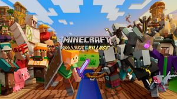
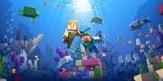

Here lies the minecraft updates news that released and maked Minecraft great again!
Minecraft 1.16.5 Nether Update
date: January 15, 2021
Release
The Nether Update is a major update themed around revamping the Nether. It adds multiple new features to this dimension,
such as new biomes and mobs. The update was announced at MINECON Live 2019[1] and was released on June 23, 2020, only
for the Java and Bedrock editions of Minecraft.
It was released as Java Edition 1.16 and Bedrock Edition
1.16.0.
This update's development on Java Edition started with snapshot 20w06a, which was released on February 5, 2020. The
first pre-release was released on June 4, 2020, followed by the second on June 5, the third on June 10, the fourth on
June 11, the fifth on June 12, the sixth on June 15, the seventh on June 16,
and the eighth on June 17. The first and
only release candidate was released on June 18.
This update's development on Bedrock Edition started with beta 1.15.0.51, which was released on February 12, 2020.
Bedrock Edition 1.15.0 was skipped to bring parity between Java and Bedrock release versions.
For Minecraft China, the full update was released on January 28, 2021.
Additions
New blocks:
+ Soul fire
- Generates naturally in soul sand valleys, or by lighting soul soil or soul sand on fire. Burns infinitely on these
- blocks. Does twice the damage as normal fire. It glows in a blue light. It scares and wards off any nearby piglins.
- Crafted similarly to a torch, but with a soul sand or soul soil block on the bottom. It glows with a light level of 10,
- in a blue appearance, and scares off nearby piglins.
+ Soul lantern
- Crafted as a regular lantern would, but with a soul torch replacing the regular torch. Glows blue, and emits a light
- level of 10. It wards off nearby piglins.
- Crafted as a regular campfire, but with soul soil or soul sand replacing the coal. Emits a blue glow, with a light
level
- of 10. Wards off nearby piglins.
- Generates naturally in their corresponding biomes, the crimson and warped forests, on crimson or warped nylium. When
- fertilized with bone meal, it grows into crimson or warped huge fungi, as long as it is planted on it's corresponding
- nylium. Can be obtained infinitely from applying bone meal to nylium of either type.
- Woodlike blocks that make up the stems of crimson and warped huge fungi. Can be crafted into corresponding plank,
slab,
- stair, fence, fence gate, door, trapdoor, button, or pressure plate variants. Does not burn, and can be stripped with
an axe.
- Crafted with 4 crimson or warped stems. Resembles crimson or warped stems, but with the bark on all sides.
- Crimson and warped planks
- Four are crafted from a single crimson or warped stem.
- A variant of nether wart block that generates in warped forests and as part of huge warped fungi. It does not have a
- crafting recipe and can be obtained only from the previously said sources.
- Sometimes generates as part of huge fungi. Glows with a light level of 15.
- Generates in the ceiling of crimson forests and as part of huge crimson fungi. Applying bone meal makes it grow
downward.
- Generates in warped forests. Can be obtained by applying bone meal to warped nylium, and can be grown upward.
- Makes up the "grass" of the crimson and warped forests. Can be spread onto adjacent netherrack by applying bone meal
it.
- Mostly generate in their corresponding forest biomes; however, crimson roots can also generate in soul sand valleys
and
- rarely in warped forests. Generates on nylium or soul soil, and can be obtained by fertilizing nylium with bone meal.
- Generates in warped forests. Can be fertilized with bone meal, and obtained from warped nylium. If broken without
- shears, it drops nothing.
- Generates naturally in soul sand valleys. Is affected by the Soul Speed enchantment.
- Generates in large patches in basalt deltas, forming stacking structures, although it can also generate in basalt
- pillars in soul sand valleys. Can be infinitely generated by placing a lava source or flowing block next to blue ice,
as
- long as it is also adjacent to soul soil. Can also be used to craft polished basalt.
- Generates in both brick and raw form in bastion remnant structures. Can be polished through a stonecutter or by
crafting
- 4 together. Polished variants can also be turned into button or pressure plates, or bricks. All variants have
- corresponding slab, stair, and wall variants. Also generates in basalt deltas in large patches and in small patches in
- other Nether biomes.
- Generates in all Nether biomes. Drops 2–4 gold nuggets upon mining, although this can be increased with Fortune.
Mining
- with Silk Touch gives the block itself, which can be smelted into a gold ingot. Aggravates any nearby piglins if
mined.
- Can be obtained via bartering with piglins or from a ruined portal. Emits a light level of 10, and purple "teardrop"
- particles. Six crying obsidian and 3 glowstone create a respawn anchor.
- Rare ore block found in the Nether, that is most commonly found below lava level, at y = 15. Can be smelted into
- netherite scraps, and generates in blobs of 1–3, always unexposed to air. Does not burn up in fire or lava when
dropped.
- Crafted using 9 netherite ingots. Can be used to activate a beacon. Does not burn up in fire or lava when dropped.
- A redstone block that is crafted with 1 hay bale and 4 redstone dust. When hit with any projectile, it emits a
redstone
- signal for a short period, without the necessity of a comparator.
- A block that can be used to set a spawnpoint in the Nether. For it to work, it must be charged using a maximum of four
- glowstone blocks, and a minimum of one. It explodes violently if used in the Overworld or the End.
- Crafted with 1 netherite ingot and 8 chiseled stone bricks, or rarely found in bastion remnant loot chests. When a
- compass is used on it, the compass always points to the lodestone, unless it is in a different dimension as the
- lodestone (in which it swerves in random directions), the lodestone is broken, or it is used on a different lodestone.
- Generates hanging lanterns in bastion remnants, or crafted from 2 iron nuggets and one iron ingot. Can be waterlogged,
- and can hang lanterns and various other blocks.
- Cracked and chiseled nether bricks, crafted similar to other cracked and chiseled blocks. The chiseled variant
resembles
- a wither skeleton skull.
- Crafted with 4 blocks of quartz in a 2×2 formation.
New items:
+ Netherite scrap
- Smelted from ancient debris. Four netherite scraps and four gold ingots craft a netherite ingot. Does not burn up in
- fire or lava when dropped.
- Can be used on diamond armor/tools in a smithing table interface to create netherite armor/tools, retaining the name,
- enchantments, and durability. Does not burn up in fire or lava when dropped.
- Significantly stronger and more durable than diamond armor, with a new statistic that affects knockback called
Knockback
- Resistance. Does not burn up in fire or lava when dropped.
- More durable than diamond tools, does not burn up in fire or lava when dropped.
- Crafted with one fishing rod and one warped fungus. Attracts nearby striders, and when a strider is ridden, it leads
it
- in the direction the warped fungus on a stick is held. When riding the strider, using the warped fungus on a stick
with
- the use key boosts the strider's movement speed for a significant amount of time, but also remove some durability.
- Can be found only in bastion remnant loot chests. When played in a jukebox, it plays the song Pigstep by Lena Raine.
- Created when a compass is used on a lodestone. Always points to the lodestone.
- A rare banner pattern found as loot in bastion remnant loot chests. When placed onto a banner, it resembles a piglin's
snout.
New mobs:
+ Piglin
- Spawns commonly in crimson forests, uncommonly in nether wastes, and in bastion remnants. Attacks the player unless it
- is wearing at least one piece of gold armor. Attacks wither skeletons and the Wither on sight, while occasionally
- attacking hoglins for food. Are attracted by gold related items, except for some of them. If the gold related item is
a
- armor piece or sword, they equip it. Piglins are afraid of soul light-related blocks. Can be bartered by giving them a
- gold ingot, which causes them to throw a random item in their bartering loot table in return.
- Spawns in lava oceans in the Nether. Can be bred with warped fungus, which creates a baby strider. Can be ridden by
- using a saddle on it, but can be controlled only with a warped fungus on a stick, similar to pigs in the Overworld.
- A mob that spawns only if a hoglin stays in the Overworld or End for 30 seconds. Is aggressive toward all mobs except
- for creepers and other zoglins.
- A hostile mob that spawns in crimson forests and in hoglin stables in bastion remnants. Is afraid of warped fungus and
- can be bred using crimson fungus. Babies also attempt to attack, but when attacked back, they run away immediately.
- A dangerous hostile mob that spawns in bastion remnants. Attacks the player regardless if it's wearing gold armor or
not
- and is not attracted by gold related items, neither can be bartered. They also attack wither skeletons and the Wither
on
- sight, just like regular piglins. Their attack damage is quite large, capable of killing a unarmored player in few
hits.
New generated structures:
+ Bastion remnants
- A rare structure that generates out of four different types, and can generate in any biome except for basalt deltas.
- Made entirely of blackstone and basalt, it spawns piglins, piglin brutes, and, if is the hoglin stables variant,
- hoglins. Contains loot chests and gold-related blocks that aggravates any nearby piglin if mined or opened.
- Spawns in soul sand valleys, made entirely of basalt.
- Large tree-like structures that generate in crimson and warped forests. Their structure is made of stems, wart blocks,
- shroomlights and if it's a huge crimson fungus, weeping vines.
- Ruined portals
- A new generated structure that comes in many different sizes, always containing 1 loot chest. They can spawn in any
- Nether or Overworld biome, even underground, in water, or in lava lakes. Occasionally contains a block of gold, and is
- made of stone bricks if generated in the Overworld, and blackstone bricks if in the Nether.
- Large structures made of bone blocks that generate in soul sand valleys. They are the Nether equivalent to overworld
fossils.
New biomes:
+ Soul sand valley
- A dangerous landscape made entirely out of soul soil and soul sand, with occasional basalt pillars and nether fossils.
- Skeletons and ghasts spawn commonly in soul sand valleys, while endermen are less common. Soul fire also generates.
- A biome floored with crimson nylium, containing crimson fungi, huge crimson fungi, crimson roots and the occasional
- warped fungi. Weeping vines occasionally generate on the roof in this biome. Hoglins, piglins and zombified piglins
- spawn in this biome, with the last one being less common.
- A biome containing similar traits to the crimson forest, with warped fungi, huge warped fungi, warped roots, nether
- sprouts and the occasional crimson fungi and roots as part of the vegetation. Twisted vines generate in large
quantities
- in this biome. Endermen spawn frequently here.
- A hard-to-surpass biome made of stalk-like basalt pillars and patches of blackstone. Lava pools ringed with magma blocks
- appear in this biome frequently. Magma cubes frequently spawn here, alongside ghasts.
New enchantment:
+ Soul Speed: allows players to walk quickly on soul sand.
New soundtrack for the new biomes:
+ Minecraft: Nether Update (Original Game Soundtrack) by Lena Raine.
Minecraft 1.15.2 Buzzy Bees Update
Date: July 19, 2019
Release
Buzzy Bees was a major update, mainly focused on bees and the items relating to them, as well as also fixing bugs from
previous versions. The update was released on December 10, 2019, only for the Java and Bedrock editions of
Minecraft.
This update was released on Java Edition as version 1.15. This update's development started with snapshot 19w34a, which
was released on August 22, 2019. The first pre-release for Java Edition 1.15 was released on November 21, 2019,
followed by the second on November 25, the third on November 28, the fourth on December 3, the fifth on December 5, the
sixth on December 6 and the seventh on December 9.
It was released on Bedrock Edition as version 1.14.0.
Additionally, this update was released for Education Edition in 1.14.31 on August 7, 2020.
For Minecraft China, the full update was released on July 16, 2020.
The official name for the update, Buzzy Bees was revealed on November 21, 2019.
Additions
New blocks:
+ Bee nests
- Are the homes of bees.
- Fills up with honey which you can collect through glass bottles.
+ Beehives
- Can be crafted using 6 wood planks and 3 honey combs - Are the homes of bees.
- Fills up with honey which you can collect through glass bottles.
+ Honey blocks
- Entities touching the side of a honey block slide down slowly.
- Takes away some fall damage upon falling onto it.
- A player or mob can not jump on honey blocks.
+ Honeycomb Blocks
- It is a decorative block.
- Crafted using four honeycombs in a crafting table.
New items:
+ Honey bottles
- Removes the Poison effect when consumed like milk.
- Collected by using a glass bottle on a beehive or bee nest.
+ Honeycombs
- Collected by shearing bee nests and beehives.
New mob:
+ Bees
- Inflicts Poison if provoked (on normal and hard difficulty), after that it becomes passive and dies
- Attacks in a swarm of bees.
- Can pollinate crops and make crops grow faster if pass by them while in pollinated state.
- Avoids water.
- Homeless bees wander around searching for empty beehives.
- Can be bred with flowers

Minecaft 1.14.4 Village & pillage Update
Date: July 19, 2019
Release
Village & Pillage was a major update themed around revamping villages that was released for versions of Minecraft in
2019, with the exception of Xbox 360 Edition, PlayStation 3 Edition, PlayStation Vita Edition, Wii U Edition, Xbox One
Edition, Nintendo Switch Edition, and New Nintendo 3DS Edition.
This update was released for Java Edition as version 1.14 on April 23, 2019. The update's development started with
snapshot 18w43a. The first pre-release for Java Edition 1.14 was released on April 10, 2019, followed by the second on
April 12, the third on April 16, the fourth on April 17, and the fifth on April 18.
PlayStation 4 Edition was the only version of Legacy Console Edition to receive the update, which was divided into
versions 1.83 on December 18, 2018, 1.88 on February 26, 2019, 1.90 on April 15, 2019, and the main update as 1.91 on
June 3, 2019.
On Bedrock Edition, features of Village & Pillage were split into four separate versions: 1.8.0, released on December
11, 2018; 1.9.0, released on February 5, 2019; 1.10.0, released on March 19, 2019; and the main update as version 1.11.0
released on April 23, 2019. Additional features were added in 1.13.0 on October 29, 2019.
Additionally, features from this update were also released for Education Edition in 1.9, 1.12.0, and 1.14.31.
The official name for the update, Village and Pillage was revealed on September 29, 2018, during the MINECON Earth 2018
livestream.
For Minecraft China, the full update was released on July 4, 2019, based on Bedrock Edition 1.11.
Additions:
New blocks:
+ 14 new stairs, including, stone, diorite, andesite, granite (and their polished variants), mossy stone brick, mossy
+ cobblestone, smooth sandstone, smooth red sandstone, smooth quartz, red nether brick, and end stone brick.
+ 14 new slabs, including stone, diorite, andesite, granite (and their polished variants), mossy stone brick, mossy
+ cobblestone, smooth sandstone, smooth red sandstone, smooth quartz, red nether brick, and end stone brick.
+ 12 new walls, including diorite, andesite, granite, brick, stone brick, mossy stone brick, sandstone, red sandstone, prismarine, nether brick, red nether brick and end stone brick
+ Campfires
- Act as a decorative fireplace without any fire spread.
- Can cook up to four food items, but slowly (30 seconds).
- Can be lit or unlit.
- Acts as smoke signal when placed on top of a hay bale.
- Generated in bamboo forests in jungles
- Can be found in shipwrecks and jungle temples loot chests.
- Dropped by pandas.
- Can be climbed quickly.
- The player can build a pillar of scaffolding by just pressing use on the top face of a scaffolding block.
- The whole structure breaks when the bottom block is broken.
- The bottom and sides have no collision detection.
* Cornflower
- Can be crafted into blue dye
- Can be found in plains
* Lily of the Valley
- Can be crafted into white dye
- Can be found in forests
* Wither Rose
- Can be crafted into black dye
- Inflicts 1 second of wither status effect to mobs and players around it, in any difficulty besides peaceful
- Acts as a storage block similar to chests
- Generates in village fisher cottages
- Can be opened in a one by one block space unlike the chest
- Decoration block that produces sound
- Play a shaking animation and a sound when right-clicked, hit by a projectile, or activated by a redstone signal.
- Generates in village meeting points.
- When rung during a raid, all pillagers receive the glowing effect for a short amount of time.[Java Edition
only]
- Block used for smelting ores twice as fast as a traditional furnace
- Generates in village armorer houses.
- Found in villages, specifically butcher shops.
- Block used for cooking of food items faster than the traditional furnace.
- Found in villages, specifically cartographer houses.
- Block used for cloning, expanding and locking maps.
- Maps that are locked can't be modified.
- Produces bone meal.
- Using certain items on the composter has a chance to add 1 level of composting to the composter, up to 7 levels.
After
- the composter reaches level 7, it turns into level 8 (the harvestable stage), yielding 1 bone meal when used.
- Some composted items are consumed without adding a level. The chance of adding a level depends on the quality of
the
- item: larger or crafted items have a higher chance of adding a layer when used (e.g. Kelp has a low chance of about
10%, while pumpkin pie has a chance of 100%).
- Crafted with 3 planks and 4 fences.
- Found inside fletcher houses in villages.
- Player functionality will be added in a later update.
- Used by villagers of certain professions to re-stock their trading inventory.
- Found inside Toolsmith houses in villages.
- Can be used to upgrade diamond tools to netherite since 1.16
- Used by villagers of certain professions to re-stock their trading inventory.
- Found inside mason houses in villages.
- Used for crafting all stone-related items and blocks.
- A new block that can be used to remove any non-curse enchantment(s) from an item.
- Can repair items by combining them together
- Generates in village weaponsmiths
- Has a luminance level of 15.
- Acts as a new light source.
- Generates in snowy villages as lamp posts.
- Found in villages, specifically libraries.
- Block used to hold books for multiple people to read at a time.
- Emits a redstone pulse when a page is turned.
- Alternate, easier and cheaper method of making banners.
- Generate in village shepherd houses.
- A technical block.
- A 'junction' block that allows the player to construct structures out of smaller templates.
New items:
+ Banner Patterns
- Crafted with paper and their associated items.
- Stronger than bows, but slower to reload.
- Can be enchanted with new enchantments:
* Multishot
* Fires three arrows at once in different directions.
* Quick Charge
* Decreases the reload time.
* Piercing
* Can shoot firework rockets holding the crossbow in one hand and the fireworks in the other.
* Projectile pierce through enemies.
- Can be crafted.
- Added white dye, blue dye, brown dye and black dye.
- Items previously used as dyes (bone meal, lapis lazuli, cocoa beans and ink sacs) can still be used except for
some
- instances (such as in the crafting of firework stars).
- Found in shipwreck supply chests.
- Can be crafted with a red and brown mushroom, a bowl and any flower.
- Can not be obtained in the creative inventory.
- It restores 6 (🍗🍗🍗) and 7.2 saturation points, and gives roughly 5 seconds of a status effect.
- The effect given upon eating depends on which flower is used, as does the exact duration of the effect.
- Oxeye Daisy gives Regeneration.
- Cornflower gives Jump Boost.
- Lily of the Valley gives Poison.
- Wither Rose gives Wither.
- Tulip gives Weakness.
- Azure Bluet gives Blindness.
- Allium gives Fire Resistance.
- Blue Orchid gives Saturation.
- Poppy gives Night Vision.
- Dandelion gives Saturation.
- A food item.
- Harvested from Sweet Berry Bushes.
New mobs:
+ Cats
- Typically found wandering around villages as strays.
- Black cats can spawn in swamp huts.
- Untamed cats can despawn.
- Eight new skins, with a ninth chosen by the community.
- Tamed cats sleep or sit on the owner if they go to sleep in a bed.
- When the owner wakes up from the bed, the owner may receive a gift, based on a loot table.
- The possible gifts are: string, raw chicken, feather, rabbit hide, rabbit's foot, rotten flesh or phantom
membrane.
- Scare off phantoms, and hiss at them.
- Cat collars can now be dyed.
- Another subset of illagers.
- Raid, or take over, villages, killing villagers.
- Wield crossbows.
- Large, hostile bull-like creatures equipped with armor and saddles.
- Very tough.
- Destroy crops and leaves.
- Can be passive or neutral, depending on their variant.
- Spawn in bamboo forests inside jungles.
- Eat bamboo items.
- Have varying personalities and traits.
- Can be lazy, playful, worried or aggressive.
- Their emotions can be read on their faces.
- Baby pandas can sneeze, startling the parent.
- Have a rare brown variant
- Spawn in Taiga biomes, taiga villages and their variants, more commonly at night.
- Are about as fast as ocelots.
- Pick up any items and blocks dropped on the ground with their mouth.
- They attack rabbits and chickens.
- Can be bred with sweet berries - the baby then trusts the player and does not flee.
- Are attacked by wolves and polar bears.
- Not available on PlayStation 4 Edition.
- Only one spawns at any given time randomly around the world.
- Spawn with trader llamas.
- Despawn after 2 to 3 days.
- Trades biome-related materials.
- Trades do not refresh after being locked.
- Spawn with wandering trader
- Have unique default carpet skin.
- Attack all zombie and Illager variants.[Java Edition only]
- Attack players and other mobs who harm their trader.
- Despawn after 2 to 3 days.

Minecraft 1.13.2 Full-Release (Aquatic Update)
Date: October 16, 2018
Release
The update was released for Java Edition on July 18, 2018 as version Java Edition 1.13.
The update was released for the Xbox 360 Edition, PlayStation 3 Edition, PlayStation Vita Edition, Wii U Edition, and
PlayStation 4 Edition on September 11, 2018. The Xbox One Edition, Nintendo Switch Edition, and New Nintendo 3DS
Edition were omitted from the update.
On Bedrock Edition, the Update Aquatic was split into two updates, with most of the features being released in Phase One
as version 1.4.0 on May 16, 2018, and more features released in Phase Two as version 1.5.0 on July 10, 2018.
Additional features were added in 1.6.0 on August 28, 2018.
Additionally, the Update Aquatic was released for Education Edition in the 1.4 update on June 12, 2018, and
additional features released in the 1.7 update on November 12, 2018. The update was also released for Minecraft China;
it was released on mobile devices on July 6, 2018, and on PC on July 10, 2018.[8]
The first pre-release on Java Edition, 1.13-pre1, was released on June 4, 2018, the second pre-release was released on
June 15, the third on June 21, the fourth on June 26, the fifth on June 28, the sixth on July 4, the seventh on July 10,
the eighth on July 13, the ninth on July 16, and the tenth on July 17. This update had 10 pre-releases for Java Edition,
the largest number of pre-releases for any update.
Additions
New blocks:
+ Trapdoors, pressure plates, and buttons for the other 5 types of wood besides oak
- 10 types of coral block, 5 types of corals, and 5 types of coral fans
- 5 types of dead coral fans
- Generate in ocean biomes, except warm oceans.
- Can be placed only underwater, requiring at least one water block above it
- Can grow multiple blocks high.
- Smelts 20 items when used as fuel in a furnace.
- Crafted from dried kelp, and can also be crafted back into dried kelp.
- Generates in oceans (including underwater caves), rivers, and swamplands.
- Drops from turtles when killed.
- Can be generated when using bone meal on any block underwater.
- Generate in warm oceans, especially around coral reefs.
- Up to 4 of them can be placed on a block.
- Each one adds 3 to the light level, but only when placed underwater.
- Can be smelted into lime dye.
- Created by breeding turtles.
- Stepping on them breaks them.
- Zombies, zombie pigmen, and drowned intentionally step on turtle eggs.
- Generates in icebergs.
- More slippery than ice and packed ice.
- Crafted using 9 packed ice.
- When active, affects nearby players in water with the Conduit Power effect.
- Emits a strong glow, at light level 15.
- Wood (previously available only using /setblock) Now have an item form and appear in the creative inventory.
- They can now be crafted, 4 logs in a square yield 3 wood.
- A barkless variant of logs.
- Created by using an axe on a log block.
- Act as regular logs, and can still be used to craft planks.
+ Magma block columns pull entities down and soul sand columns push entities up.
+ Prismarine stairs and slabs
- Comes in all 3 variants: prismarine, dark prismarine, and prismarine bricks.
New items:
+ Trident
- Can be thrown by using it, or be used as a melee weapon by attacking, dealing 9♥♥♥♥♥ damage.
- Obtained by killing a drowned
- Dropped when baby turtles grow up.
- Can be used to craft turtle shells.
- Can be used as a helmet, adding 2 armor points.
- Can be used to brew the potion of the Turtle Master.
- Obtained by smelting kelp.
- Can be eaten, restoring 1 (🍗) hunger point.
- Dropped by phantoms.
- Used to repair elytra.
- Used to brew potions of Slow Falling.
- Found in all buried treasure chests in stacks of 1.
- Obtained from fishing or Drowned
- Potion of the Turtle Master
- Gives Slowness IV and Resistance III.
- Arrow of the Turtle Master
- Gives the same effects as potion of the Turtle Master
- Potion of Slow Falling
- Grants the Slow Falling effect
- Arrow of Slow Falling
- Grants the Slow Falling effect
- A technical item used to cycle between different block states.
- Leads the player to buried treasure.
+ Fish buckets: cod, salmon, pufferfish, and tropical fish
New effects:
+ Slow Falling
- Prevents fall damage.
- Makes the player fall slower.
- Stops the breath meter from running out, gives underwater night vision, and increases mining speed.
- Makes the player swim faster.
- Acquired by swimming near dolphins.
New mobs:
+ Phantom
- Spawns in the Overworld when players haven't slept in a while. Considered undead mobs.
- Spawn in any ocean that isn't frozen. Neutral mobs.
- They can help players find buried treasure; when they are fed raw cod, they swim to the nearest shipwreck or
underwater ruins.
- Spawn on warm beaches in small groups.
- Drop 0-2 seagrass upon death.
- Spawn in all oceans and rivers, as well as in swamps and underwater ruins.
- Zombies convert into drowned if submerged in water for a while.
- Cod, salmon, pufferfish, and 3,584 types of tropical fish
+ Shipwrecks
+ Can be found in oceans and beaches.
+ Contain 1–3 loot chests containing different types of loot depending on the ship.
+ Can generate upright, sideways or upside down.
+ Icebergs,[9] which generate in frozen ocean biomes
+ Underwater ruins
+ Have a cold and warm variant.
+ Buried treasures
+ Underwater caves and ravines
+ Coral reefs
+ Naturally generate in warm ocean biomes.
+ Are composed of coral, coral blocks and coral fans.
New biomes:
- Warm, lukewarm, and cold variants of ocean and deep ocean biomes, as well as a deep frozen ocean biome
- Divided the End up into separate biomes: Floating, Medium, High, and Barren islands.[Java Edition only]
World types:
- Buffet mode[Java Edition only]
- Data packs[Java Edition only]
+ Custom tags.
+ Item forms for mushroom blocks, bark blocks, and double slabs.[Java Edition only]
+ 3 new commands: /data, /datapack, and /bossbar.[Java Edition only]
+ A command suggestion UI.[Java Edition only]
+ A smooth transition is applied to the camera when the player sneaks.
+ Changed pumpkin texture, and renamed the old texture to "carved pumpkin", available when a pumpkin is right-clicked with shears.
+ Water source blocks can now be placed inside of semi-transparent blocks such as stairs and slabs, called waterlogging.
+ Added many new sounds and 3 new underwater music pieces by C418